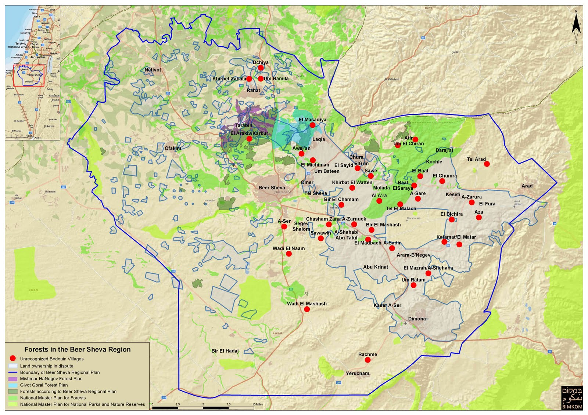
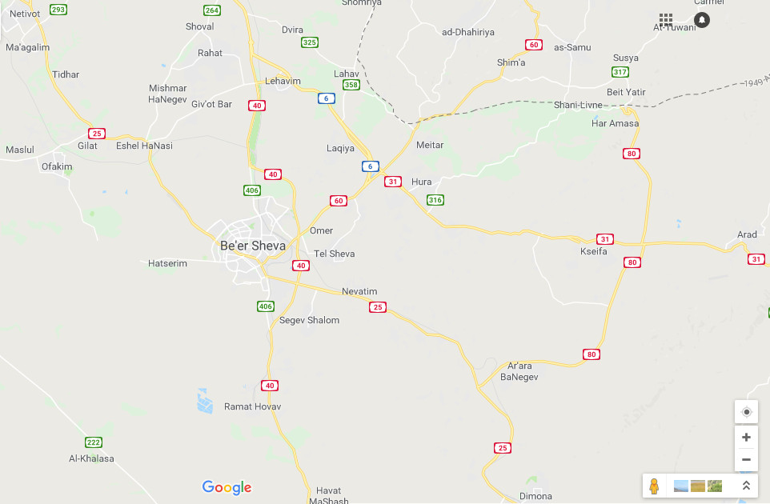
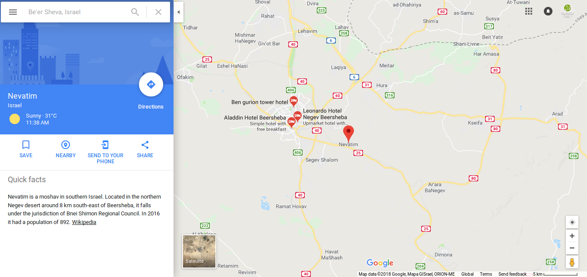
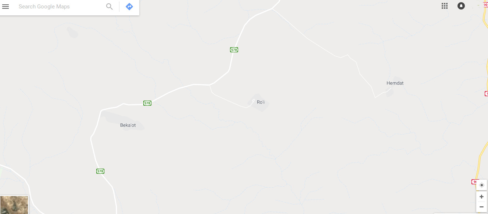
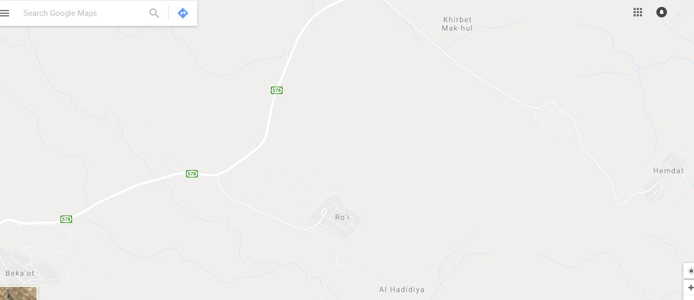

هناك 36 قرية فلسطينيّة غير معترف بها في صحراء النقب في جنوب إسرائيل (نصاصرة 2018)، وعدد من القرى الفلسطينيّة غير المعترف بها في منطقة C في الضفّة الغربيّة المهدّدة بخطر الهدم بشكل دائم. لا تعترف السلطات الإسرائيليّة بهذه القرى بشكل رسميّ، وترفض بشكل منهجيّ إصدار تصاريح بناء للفلسطينيّين لتسويغ عدم قانونيّتها. غالبًا ما تفتقر هذه القرى إلى خدمات أساسيّة، بما في ذلك الربط بشبكة الكهرباء وإمدادات المياه، بالإضافة إلى البنى التّحتيّة وخدمات الرعاية الصحيّة والتعليم (جرزمك 2018). ينطبق القانون الإسرائيليّ على القرى التي تقع في النّقب، ويسري القانون العسكريّ على القرى الواقعة داخل منطقة C في الضّفّة الغربيّة.
توجد 46 قرية بدويّة في النّقب، كانت غالبيّتها موجودة قبل قيام إسرائيل في عام 1948، ويدّعي البعض أنّها موجودة منذ القرن السّابع ميلاديّ. لا تعترف السلطات الإسرائيليّة بملكيّة البدو للأرض، وبدلاً من ذلك تصنّفهم كـ"معتدين على أراضي الدولة" (عدالة 2018). إن البنى التحتيّة والظروف المعيشيّة الاجتماعيّة والاقتصاديّة في التجمّعات البدويّة هي الأدنى في إسرائيل (عدالة 2018). خلقت كل من خطّة برافر ومذكّرة قانون تنظيم استيطان البدو في النقب (2016) أجواء تهديد دائم بالهدم والإخلاء القسريّ، بحيث يتيح القانون تهجير جماعيّ قسريّ لأكثر من 70,000 بدوي بالإضافة إلى هدم القرى البدويّة. بالمقابل، اعترفت السلطات الإسرائيليّة بسبعين مزرعة يهوديّة في النّقب بهدف الحفاظ على أغلبيّة سكّانيّة يهوديّة. (ACRI 2012؛ ACRI، بمكوم، RCUV 2011؛ سفيرسكي، حسون 2006؛ عدالة (بدون سنة)؛ 2011؛ 2017، المركز العربي للتّخطيط البديل 2013؛ بمكوم 2014؛ بمكوم، RCUV 2012؛ مركز مساواة 2017). إحدى الطرق للقضاء على القرى الفلسطينيّة غير المعترف بها هي الاهتمام بتمثيلها بشكل غير لائق في الخرائط. بموجب هذه السياسة، لا تظهر هذه القرى من النظرة الأولى في خرائط "جوجل" أو في الخرائط الإسرائيليّة، باستثناء خرائط الجيش وخرائط التجوال، وتتم الإشارة إلى هذه القرى في خرائط المؤسّسات غير الحكوميّة بهدف زيادة مرئيّتها. تظهر القرى البدويّة في خرائط "جوجل"، وبعكس مدن وقرى أخرى، بحسب اسم القبيلة (بمكوم) وليس بحسب أسماء القرى، ويمكن رؤيتها على الخريطة فقط إذا أُجري تكبير شديد، ولكن في أي حالة أخرى لا تظهر القرية بتاتًا. هذا يعني أنّه إذا نظرنا إلى خرائط "جوجل"، يبدو أن هذه القرى غير موجودة، وفقط إذا قمنا بتكبير شديد جدًا تظهر هذه القرى تحت أسم القبيلة أو العشيرة. ولذلك، فإن هذه القرى ببساطة غير موجودة من النظرة الأولى (والثّانية والثّالثة).
بالرّغم من صغر حجمها، تظهر التجمّعات الإسرائيليّة في الخريطة حتى عند التصغير، بينما لا تظهر القرى الفلسطينيّة البدويّة غير المعترف بها، بغض النّظر عن حجمها، إلا عند القيام بتكبير شديد.
صورة: قرى غير معترف بها في النّقب- بمكوم
لقطة شاشة: قرى غير معترف بها في النّقب - خرائط "جوجل"
لقطة شاشة: قرية نيفاتيم الإسرائيليّة تظهر في خرائط "جوجل" على الرّغم من التصغير
تقع مسؤوليّة تخطيط الأراضي وتقسيم المناطق في منطقة C على الإدارة المدنيّة الإسرائيليّة (ICA)، والتي تستمد قوّتها من الجيش الإسرائيليّ (ACRI 2012، بمكوم 2008). خصّصت السياسة الإسرائيليّة لتقسيم المناطق 1% فقط من منطقة C لبناء الفلسطينيّين؛ ويُمنع البناء على 99% من باقي الأراضي (أونروا (بدون سنة)). توفّر بوابة جيومولغ للمعلومات الجيومكانيّة في فلسطين التّابعة للسّلطة الفلسطينيّة خريطة تفاعليّة تبيّن التقييدات المفروضة على البناء للفلسطينيّين، وذلك يشمل حدود المستوطنات غير القانونيّة والمخطّطات الرئيسيّة المعتمدة ومخطّطات الانتداب البريطانيّ والمحميّات الطبيعيّة وأوامر الهدم في عام 2017 وحدود التجمّعات البدويّة. تمت المصادقة على 1.5% فقط من طلبات ترخيص البناء بين الأعوام 2010 و2014، ممّا أجبر الفلسطينيّين على بناء مبانٍ بشكل غير قانونيّ والتعرّض لخطر الهدم. أُصدرت أوامر بهدم 11,000 مبنى فلسطينيّ في عام 2015، ممّا أثّر على 149 قرية فلسطينيّة في منطقة C (OCHA oPt 2015، OCHA oPt 2009). يمكن معاينة عواقب هدم البيوت وسياسة التخطيط في منطقة C في الضّفّة الغربيّة في خريطة بتسيلم التفاعليّة.
بعكس القرى الفلسطينيّة في النّقب، فإن بعض القرى في غور الأردن في منطقة C لا تظهر في خرائط "جوجل". في حين أنه يمكن مشاهدة مستوطنات إسرائيليّة عند النظر إلى منطقة واسعة في الخارطة، لا يمكن مشاهدة القرى الفلسطينيّة إلّا عند التكبير الشديد، وهذا نتيجة لمعلومات سلّمتها منظّمة بمكوم بعد ممارسة الضّغط على "جوجل". تظهر المستوطنات التي تقع في الضّفّة الغربيّة على الخارطة على أنّها تقع داخل إسرائيل، وذلك على الرغم من وجود مصطلح "الضّفّة الغربيّة" أيضًا على الخارطة.
صورة: قرى غير معترف بها في النّقب- بمكوم
لقطة شاشة: قرى غير معترف بها في النّقب - خرائط "جوجل"
لقطة شاشة: غور الأردن كما يظهر في تطبيق خرائط "جوجل" بعد التصغير
لقطة شاشة: غور الأردن كما يظهر في تطبيق خرائط "جوجل" بعد التكبير
